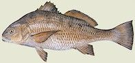

Background
Black drum, Pogonias cromis, is a member of the drum family Sciaenidae. This fish occurs along inshore waters and estuaries from Argentina to the Gulf of Mexico, and from the east coast of Florida up the coast as far as New England. Black drum are most commonly found from the Chesapeake Bay south to Hatteras. Coastal and estuarine areas are extremely important as feeding, nursery and spawning areas for black drum. Major alterations to these habitats could disrupt their life cycle.
Life Cycle
Black drum spawn at the mouth of the Chesapeake Bay and seaside inlets of the Eastern Shore when the water temperature reaches 57 to 67 degrees F, between April and early June.
Mature females may carry more than 30 million eggs.
A modest catch of young-of-the-year black drum by commercial gill and pound nets in October of some years suggests a southern migration each autumn.
It is possible that juvenile and adult black drum could over-winter in the Sound system during mild winters or if suitable refuge could be found.
Black drum from the Gulf Coast have been known to tolerate waters as cold as 37 degrees F.
The fish appear to migrate very little during their first three years of life.
It is believed that young black drum migrate from their estuarine habitat to offshore habitat along the Texas coast at age four.
Mature adults return to the estuarine system for spawning, where they disperse throughout the Bay and nearby ocean waters.
Black drum become sexually mature by the end of their second year, when they are 11 to 14 inches.
Recent studies indicate that some black drum can reach a total length of 47 inches and live for more than 40 years.
|
|